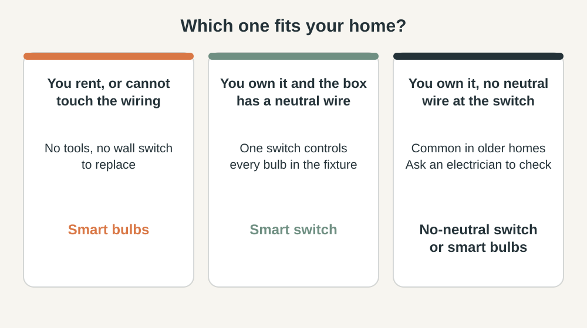

SMART HOME · LIGHTING
Smart Bulb or Smart Switch? How to Choose
Both make a light smart. They fail in different ways, cost differently and suit different homes. This guide helps you choose in about five minutes.
Short answer: rent, or cannot touch the wiring? Use smart bulbs. Own the home and the switch box has a neutral wire? A smart switch controls every bulb in the fixture and keeps working when someone flips the wall switch. No neutral wire? Use a no-neutral switch or smart bulbs, and have an electrician check first.
1. Smart bulb or smart switch: the difference
- Smart bulb. The intelligence is in the bulb. Screw it in and pair it. Many models offer colour. The wall switch must stay on, or the bulb cannot respond.
- Smart switch or dimmer. Replaces the wall switch and controls the power to the whole fixture. It works with ordinary bulbs, but it cannot change their colour, and installing it means working inside the switch box.

2. Check for a neutral wire first
Most smart switches need a neutral wire in the switch box for standby power, so they can stay connected when the light is off. Electrician ajlong Electric notes that homes built before the 1980s often lack it, which limits you to no-neutral models. Without a neutral, your options are a no-neutral switch, smart bulbs, or an electrician running a neutral to the box.
Safety: switch the circuit off at the breaker and confirm it is dead with a voltage tester before opening a switch box. If you cannot identify the wires, stop and call a licensed electrician.
3. Know the no-neutral trade-offs
No-neutral products draw their standby power through the light itself. Power Integrations, a chip maker for these switches, explains that this works for old incandescent bulbs, but with LEDs the leaked current can cause flicker or a faint glow called ghosting. For example, Lutron lists its Caseta dimmer as needing no neutral, needing a hub (the Smart Bridge), and handling up to 150 W of dimmable LED or CFL, or 600 W of incandescent or halogen.
- Add up the wattage of the bulbs on the switch and stay below the rating.
- Use bulbs labeled dimmable, and check the switch maker's compatibility list.
- Do not fit a motor load such as a ceiling fan to a light dimmer.
4. Combine them where it makes sense
Many homes use both: smart switches for overhead lights, smart bulbs for bedside lamps where you want a warm, low glow.

If you use smart bulbs, stop the wall switch being flipped by mistake. A switch cover or a wireless remote keeps the bulb powered. See our guides to evening lighting and motion lighting.
5. Check the standby cost before you add bulbs
Smart devices keep a radio awake to hear commands, so they draw a little power even when the light is off. ENERGY STAR says certified smart lighting uses less energy both on and in standby, and IEA 4E notes that smart lamps need power for standby and gateways. The figure is on the spec sheet under "standby power" or "networked standby".
The formula: standby watts × 24 × 365 ÷ 1,000 = kWh per year. As an example, 0.5 W per bulb is about 4.4 kWh a year per bulb, or about 44 kWh for ten bulbs. Multiply by your electricity rate to see the cost. A fixture with five sockets needs five smart bulbs but only one smart switch, so the switch usually means one standby draw instead of five. Keep smart bulbs for lights you actually automate.
6. Run the router-off test
Before you trust a setup, run this ten-minute test.
- Switch off your Wi-Fi router or unplug it.
- Turn the light on and off using the wall switch, the wireless remote and any physical dimmer.
- Ask someone who never uses the app to do the same without help.
- Plug the router back in and check that schedules resume on their own.
If the light cannot be controlled without the internet, fix that before you add more devices.
7. Start with one room and one problem
- Name one repeated annoyance, such as a dark hallway at night.
- Choose the smallest fix from the cards above.
- Keep a normal way to turn the light on, so guests and family are never stuck.
- Test for a week before adding more.
8. Common mistakes
- Buying smart switches before checking for a neutral wire.
- Putting a smart bulb on a dimmer.
- Exceeding the wattage rating of the dimmer.
- Leaving the wall switch easy to flip in a smart-bulb room.
- Automating five rooms at once and learning nothing.
This guide is general information, not professional electrical advice. Local rules differ.
Frequently Asked Questions
Do smart switches need a neutral wire?
Most do, because the switch needs constant power to stay connected. Some models, such as Lutron Caseta dimmers, are sold as working without one. Check the product listing before you buy.
Can I use a smart bulb on a normal dimmer?
Avoid it. A smart bulb manages its own brightness, so a dimmer in front of it can cause flicker or stop it responding. Leave the wall switch on and control the bulb with the app, voice or a wireless remote.
What happens to smart bulbs if someone flips the wall switch off?
The bulb loses power and cannot respond to the app, voice or schedules until the switch is on again. A switch cover or a wireless remote stops this.
Why do my LED bulbs glow faintly when switched off?
This is called ghosting. It can happen when a no-neutral smart switch leaks a small current through the load. Low-power LED bulbs are the most likely to show it, so check the switch maker's compatibility list.
Can I install a smart switch myself?
Many people do, but you must turn the power off at the breaker first. If you cannot identify the wires, or find no neutral wire, call a licensed electrician. Local rules differ.
Sources and last review
Last reviewed: October 8, 2026. Product specifications come from manufacturer listings. Check your own model and local electrical rules before installing.
- Lutron Caseta Wireless dimmer product listing (Lowe's)
- Power Integrations: no-neutral wireless wall switches
- AJ Long Electric: smart switches vs smart bulbs
- ENERGY STAR: Smart Lighting
- IEA 4E: Smart Lighting, new features impacting energy consumption
- eceee 2015: Not so clever when they are off, standby power use in smart lamps